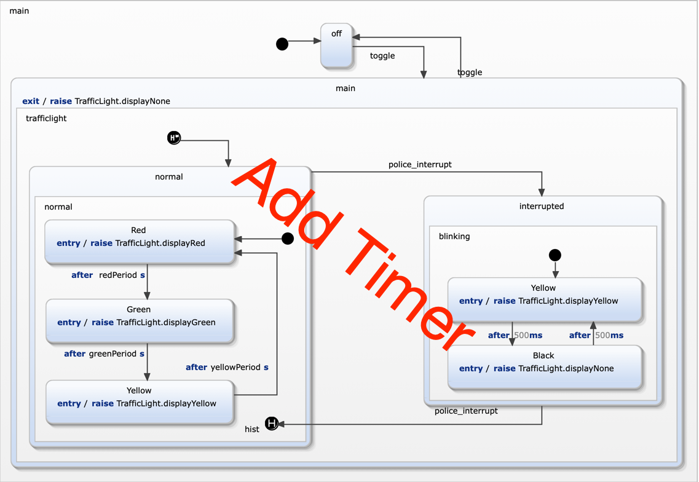

Exercise 8
Traffic light with timer
In this exercise a timer must be modeled. It introduces using orthogonal regions.

Requirements
- R10: A timer displays the remaining time while the light is red or green
- R10a: This timer decreases and displays its value every second.
- R10b: The colour of the timer reflects the colour of the traffic light.
Model the feature
The interface is already prepared. You schould add all required variables and local events in the internal: declaration scope.
Follow the same procedure as in previous exercises.
- Take a look at specification/TimerSpecification.sctunit. These test cases are already complete and checks all the requirements defined above.
It will fail on the first run.
- Extend the stetchart. All required declarations are already in place.
- While you are extending the statechart run the test suite TestTrafficLight.sctunit. It contains the new interrupt specification and
all previously defined tests. Running this suit makes sure that no regressions occur.
- Continue from 2. until all tests are green. You should also have no uncovered model elements.